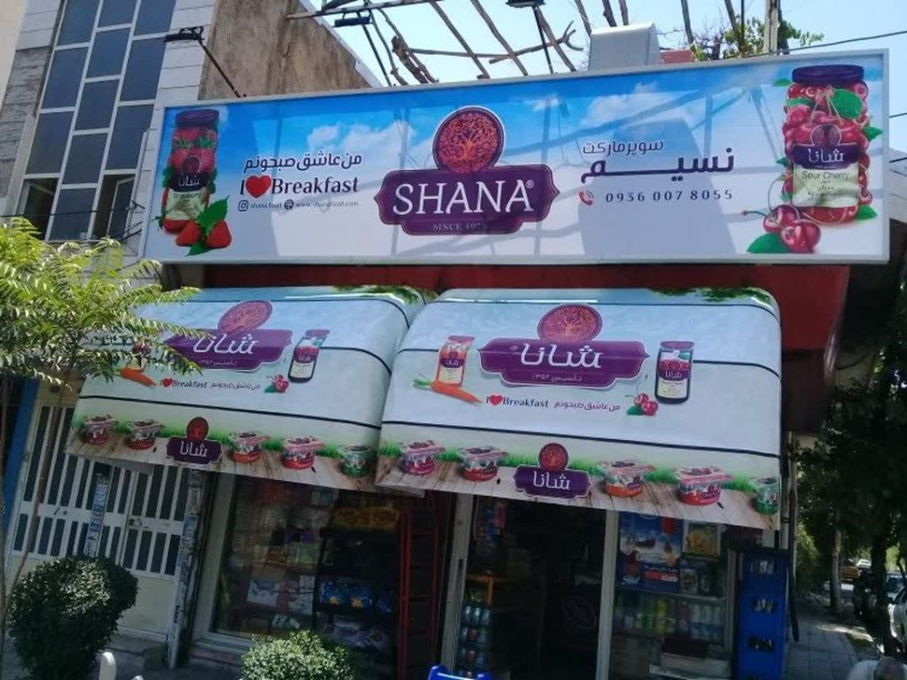
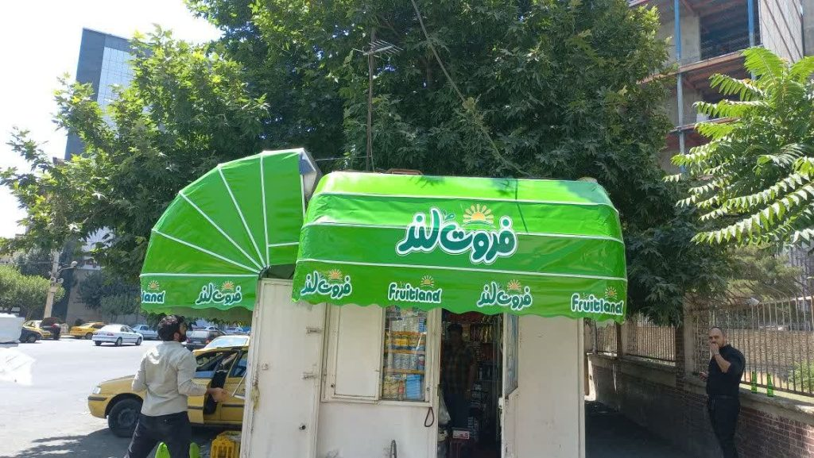
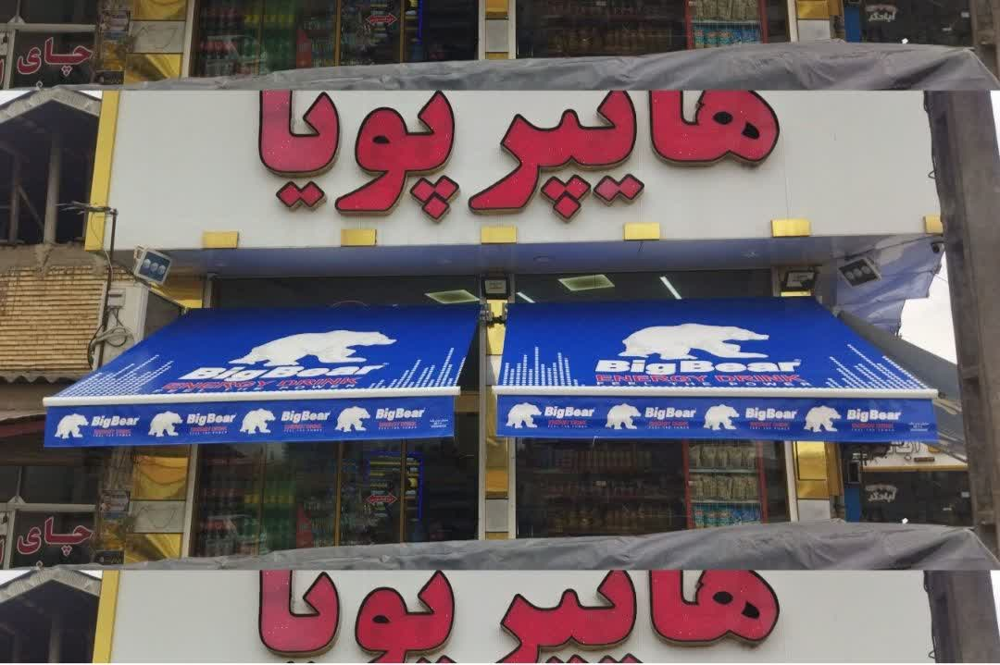
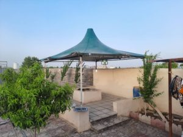
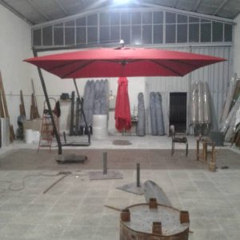
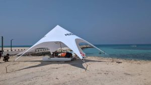
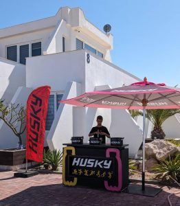

طراحی متناسب با فضای واقعی شما
سایبان فقط پوشش نیست؛ بخشی از هویت برند شماست
از سایبان کالسکهای فروشگاه تا سازههای فنری، پردهای و چتری؛ طراحی، تولید، چاپ و نصب را یکپارچه انجام میدهیم تا نتیجه هم زیبا باشد و هم ماندگار.
۴ خانواده محصول۱۰۰٪ طراحی اختصاصییکپارچه ساخت تا نصب


ساخت دقیقمتناسب با ابعاد و هویت بصری پروژه
01فرم کلاسیک، اجرای مدرن
سایبان کالسکهای تبلیغاتی
فرم ربعدایره سایبان کالسکهای، نمای ورودی فروشگاه، کافه و ساختمان را شاخص میکند و همزمان مانع تابش مستقیم آفتاب و بارش میشود. رنگ، ابعاد و چاپ روی پوشش کاملاً متناسب با برند شما انتخاب میشود.
- مناسب در و پنجره فروشگاه
- قابلیت چاپ لوگو و پیام تبلیغاتی
- مدل ثابت، دستی یا موتوردار



02انعطاف برای هر ساعت روز
سایبان فنری و بازویی
سایبان فنری با بازوهای مقاوم، سطح پوشش بزرگی ایجاد میکند و در مدل دستی یا برقی قابل کنترل است. برای تراس، کافه، فروشگاه و محوطههایی که به باز و بستهشدن سریع نیاز دارند انتخابی مطمئن است.
- قابلیت کنترل دستی یا ریموت
- پوشش گسترده بدون ستون مزاحم
- پارچه مقاوم در برابر نور و رطوبت



 محافظت کنترلشده در برابر نور، باد و دید
محافظت کنترلشده در برابر نور، باد و دید03راهکار عمودی و جمعوجورکاربریتراس، پنجره و فضای نیمهباز مکانیزمدستی یا موتور برقی پوششضدآب و مقاوم در برابر UV سفارشیسازیرنگ، ابعاد و چاپ اختصاصی
سایبان پردهای
سایبان پردهای برای پنجره، تراس، بالکن و فضاهای نیمهباز طراحی میشود. این مدل با اشغال فضای کم، تابش مستقیم و بخشی از جریان باد را کنترل میکند و در مدلهای دستی و موتوردار قابل اجراست.
04سایهای مستقل برای فضای باز
سایبان چتری
سایبان چتری برای کافه، رستوران، باغ، روفگاردن و محوطههای تجاری ساخته میشود. سازه مستقل، جابهجایی آسان و تنوع فرم و رنگ باعث میشود بدون تغییر دائمی در بنا، فضای قابل استفاده بیشتری بسازید.
- پایه مرکزی یا کنارپایه
- مناسب چیدمانهای متغیر
- مقاوم در برابر آفتاب و بارش




قیمتگذاری شفاف
چه عواملی قیمت سایبان را مشخص میکنند؟
بعد از اندازهگیری و شناخت کاربری، برآورد دقیق ارائه میشود. این شش عامل بیشترین اثر را روی هزینه نهایی دارند.
درخواست برآورد اولیهاز انتخاب تا نصب
یک مسیر روشن برای رسیدن به سایبان مناسب
مشاوره و بازدید
نیاز، فضای اجرا و محدودیتهای پروژه بررسی میشود.
طراحی و انتخاب متریال
مدل سازه، پوشش، رنگ و چاپ نهایی میشود.
تولید و کنترل کیفیت
قطعات در کارگاه ساخته و پیش از ارسال بررسی میشوند.
نصب تخصصی
سازه در محل نصب، تنظیم و آماده بهرهبرداری میشود.
پاسخ کوتاه و کاربردی
سؤالهای پرتکرار درباره سایبان
برای انتخاب دقیقتر، پاسخ چند سؤال رایج را اینجا ببینید.
انتخاب میان مدل کالسکهای و فنری به عرض ورودی، میزان پیشروی، نیاز به باز و بستهشدن و سبک نمای فروشگاه بستگی دارد.
بله، رنگ و چاپ پوشش بر اساس هویت بصری برند طراحی و اجرا میشود.
بسته به موتور انتخابی میتوان مکانیزم خلاصکن یا راهکار دستی اضطراری در نظر گرفت.
زمان دقیق به مدل، ابعاد و حجم سفارش وابسته است و پس از تأیید طراحی در برنامه پروژه اعلام میشود.
شروع انتخاب سایبان مناسب
ابعاد و کاربرد فضای خود را با ما در میان بگذارید
کارشناسان نوین نگاه مدل مناسب، متریال و بازه هزینه پروژه را بررسی میکنند.